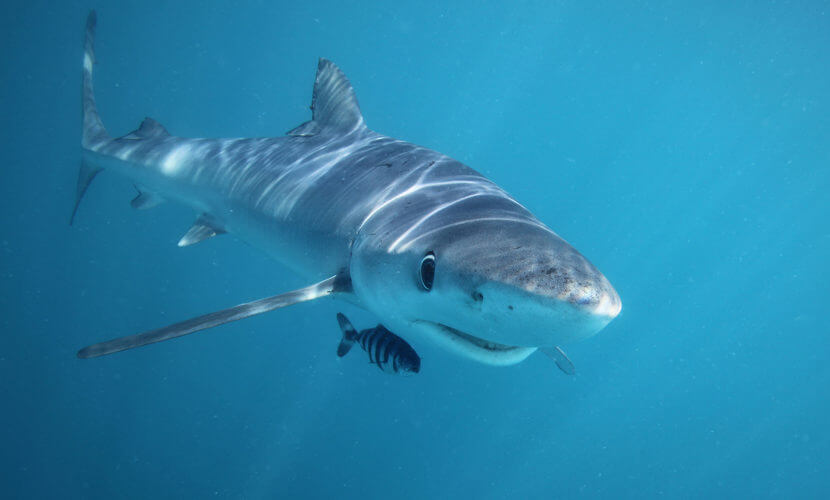

Tubarão-martelo
Tubarão-martelo (Família Sphyrna)

Tubarão-martelo (Família Sphyrna)
A família Sphyrnidae é composta por dois gêneros: Eusphyra e Sphyrna, que englobam uma e nove espécies de tubarão-martelo, respectivamente. Estes animais podem medir entre 0,9 até 6 metros de comprimento, pesando cerca de 3 a 500 kg.
Sua principal característica consiste na cabeça em forma de T, semelhante à um martelo, na qual seus olhos encontram-se espaçados em cada uma das extremidades.
A visão seria, inclusive, a principal razão evolutiva pela qual estes animais apresentam um crânio tão peculiar: seu formato permitiria aos tubarões-martelo enxergar acima e abaixo de si mesmos, promovendo uma visão 360º do ambiente marinho.
Estes peixes apresentam boca pequena, localizada na parte inferior do crânio, e dentes triangulares e serrilhados. O tubarão-martelo também caracteriza-se por duas nadadeiras dorsais (sendo a primeira maior do que a segunda), dorso acinzentado e barriga esbranquiçada.Entre as presas consumidas pelo tubarão-martelo estão as raias - seu alimento preferido, cuja caça é possibilitada pela visão, formato da cabeça e ampolas de Lorenzini-, peixes (com destaque para garoupas, bagres e pequenas espécies da família Carangidae), lulas, polvos e alguns crustáceos.
Estes tubarões caçam sozinhos, desferindo golpes com sua cabeça sobre as raias, e mordendo suas asas (i.e. nadadeiras das raias) pouco a pouco, até sua imobilização e posterior morte. Ocasionalmente, estes peixes também podem se alimentar de outras espécies de tubarão, além de atuar como canibais (i.e. consome indivíduos de sua própria espécie). Os tubarões-martelo podem formar grupos de até 500 indivíduos durante o dia, separando-se à noite para caçar.
Em relação à reprodução, pouca informação encontra-se disponível sobre os hábitos destes peixes. Vivíparos, os tubarões-martelo reproduzem-se uma vez ao ano, e suas gestações têm duração entre 10 e 11 meses. O número de embriões gerados está diretamente relacionado ao tamanho da fêmea: quanto maior o animal, mais filhotes de tubarão nascem. Tais “bebês-martelo” nascem com o crânio mole e não recebem cuidado parental, permanecendo juntos em águas rasas até que consigam se defender sozinhos.
| Espécies | Foto |
|---|---|
| Tubarão-branco |  |
| Tubarão-martelo | |
| Tubarão-baleia |  |
| Tubarão-azul |  |